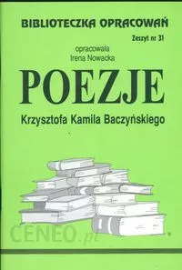

POEZJE KRZYSZTOFA KAMILA BACZYŃSKIEGO
Życie i twórczość
Krzysztof Kamil Baczyński (pseudonim Jan Bugaj) urodził się 22 stycznia 1921, a zmarł 4 sierpnia 1944 r. w Warszawie. Większość opracowań prezentujących sylwetkę poety podaje choćby najbardziej skrócone informacje na temat jego rodziców – bo też ich wpływ na rozwój osobowości syna był ogromny. Ojcem Krzysztofa był Stanisław Baczyński, krytyk literacki i publicysta; jego znana prostolinijność, uczciwość, odwaga, niezawisłość sądu sprawiały, że był dla syna rzeczywistym autorytetem i moralnym wzorem – droga życiowa Krzysztofa pod wieloma względami przypomina biografię ojca. Matka poety, Stefania z Zieleńczyków, także przejawiała nieprzeciętne zdolności humanistyczne i literackie, była pedagogiem, autorką podręczników oraz książek dla dzieci. Rodzice już od chwili narodzin przeznaczyli Krzysztofa sztuce (drugie imię otrzymał na cześć wielkiego polskiego poety romantycznego, C. K. Norwida). Największym przedmiotem rodzicielskiej troski było zdrowie jedynaka – Krzysztof cierpiał na astmę, co w znacznym stopniu utrudniało mu normalny tryb życia.
Obok atmosfery domu rodzinnego na rozwój talentu Baczyńskiego wpływ miały – zwłaszcza w początkowym, juwenilnym okresie młodzieńcze fascynacje literackie. Wśród patronów jego poezji wymienia się zwłaszcza Skamandrytów (w tym Tuwima) i twórców Awangardy (Czechowicz), a następnie polską poezję romantyczną (Słowacki, Norwid) i francuskich symbolistów (Rimbaud).
W drugiej fazie rozwoju twórczego, którą tylko umownie można nazwać „dojrzałą” – wszak Baczyński umiera, mając zaledwie dwadzieścia trzy lata – podkreślić trzeba wpływy rówieśników poety, należałoby wymienić zwłaszcza nazwisko Weintrauba, bliskiego przyjaciela, oraz Gajcego i Borowskiego.
„Późna” (znów konieczny cudzysłów), obejmująca ostatnie miesiące życia twórczość Krzysztofa Kamila Baczyńskiego, wyrastająca z jego najbardziej osobistych przeżyć i przemyśleń, zdominowana została przez dwa najważniejsze wydarzenia jego biografii: młodzieńczą miłość oraz decyzję o wstąpieniu do wojska i bezpośredniego udziału w akcjach zbrojnych. Wybranką serca poety (i adresatką wszystkich jego erotyków) była Barbara Drapczyńska, z którą Baczyński ożenił się w czerwcu 1942 roku i która zginęła w powstaniu warszawskim wkrótce po śmierci męża (tragizmu jej śmierci dodaje fakt, iż oczekiwała dziecka). Wstąpienie do podziemnej organizacji zbrojnej – w 1943 roku – oraz udział w akcjach bojowych kosztowały Baczyńskiego więcej niż jego rówieśników, gdyż pogłębiająca się choroba zamieniała w heroiczny czyn nawet rutynowe ćwiczenia. Poeta czuł jednak, iż taki wybór jest jego obowiązkiem, ostatnie wiersze, przepojone refleksjami natury filozoficznej, historycznej i religijnej, dowodzą, iż decyzja ta była w pełni przemyślana i świadoma. Jako członek „Szarych Szeregów” Baczyński początkowo współredagował konspiracyjne pismo „Droga”, wkrótce jednak wstąpił do Harcerskich Grup Szturmowych, stając się równocześnie członkiem Armii Krajowej. W harcerskim batalionie szturmowym „Zośka”, do którego został służbowo przydzielony, nosił pseudonim „Krzysztof”. Uczestniczył w akcji bojowej Tłuszcz-Orle w 1944 roku; objął funkcję zastępcy dowódcy plutonu. Walcząc w powstaniu warszawskim, poległ w Pałacu Blanka. Niektóre utwory Baczyńskiego, przepojone nastrojem grozy, smutku, beznadziejności, można odczytywać jako katastroficzne przepowiednie, mówiące o zagładzie świata i o bliskiej śmierci.
Śmierć dwudziestotrzyletniego zaledwie poety, chociaż przedwczesna i tragiczna, nie przerwała jego dzieła w połowie. Przystępując do lektury wierszy Baczyńskiego mamy wrażenie, że obcujemy z dziełem zdumiewająco dojrzałym, zamkniętym i skończonym.
Dojrzałość osiągnął Baczyński w sposób zdumiewająco szybki, osiągnął ją całkowitą, jego twórczość to zdanie pełne i skończone. Każda bowiem poezja wysokiego lotu, chociażby lot ów trwał krótko, jest pełnym zdaniem o świecie, wypowiedzianym spod obłoków, z wysokości.1
Recepcja twórczości
Przed rokiem 1939 poeta nie ogłosił drukiem żadnego utworu. W czasie okupacji, w 1942 roku, opublikował Wiersze wybrane (tom ze względów konspiracyjnych sygnowany był pseudonimem Jan Bugaj) oraz Arkusz poetyki nr 1 (1944.2) Po śmierci poety, w 1947 roku, ukazał się zbiór jego wierszy noszący tytuł Śpiew w pożogi. Później twórczość Krzysztofa Kamila Baczyńskiego na wiele lat została odsunięta w cień – zaważyły na tym względy polityczne, to jest przynależność młodziutkiego żołnierza do formacji Armii Krajowej oraz jego udział w powstaniu. Dopiero rok 1956 przynosi zmianę sytuacji w Polsce, a wraz z nią złagodzone zostają dotychczasowe zakazy cenzorskie. Rehabilitacja żołnierzy AK oraz zmiana oficjalnego stanowiska władz w sprawie powstania warszawskiego spowodowały, że najnowsza historia Polski odzyskała – przynajmniej w części – prawo do istnienia w świadomości czytelniczej.
„Odwilż” 1956 uważana jest do dzisiaj za najbardziej znaczący i najświetniejszy okres rozwoju współczesnej literatury polskiej. Należy jednak pamiętać, że był to nie tylko czas debiutu najznakomitszych poetów i pisarzy, do dzisiaj stanowiących czołówkę powojennej poezji i prozy (Bursa, Herbert, Hłasko, Szymborska, Różewicz, Białoszewski, Grochowiak, i wielu innych), ale także – okres przywracania (czy też wprowadzenia) do obiegu czytelniczego twórców pokolenia wojny i okupacji, dotąd objętych zakazem druku. Albowiem zarówno Krzysztof Kamil Baczyński jak i jego rówieśnicy (których spuścizna literacka była wprawdzie znacznie uboższa ilościowo, a niekiedy miała także mniejszą wartość artystyczną): Tadeusz Gajcy, Zdzisław Stroiński, Andrzej Trzebiński, Wacław Bojarski – praktycznie nie byli znani przez długie lata. (Wyjątkiem był tu jedynie Tadeusz Borowski, który – generacyjnie należący do tej samej grupy – przeżył wojnę i oddał swoje pióro w służbę reżimu komunistycznego). W 1957 roku ukazuje się książka Romana Bratnego (również niegdysiejszego żołnierza AK i uczestnika powstania warszawskiego) pt. Kolumbowie rocznik 20; jej tytuł stanie się odtąd nazwą całego pokolenia, którego młodość przypadła na lata okupacji, umownie też stanie się określeniem grupy młodych poetów i pisarzy poległych w czasie wojny. (Terminu pokolenie używamy tutaj zgodnie z powszechnie przyjętym w opracowaniach literatury współczesnej zwyczajem, nie chodzi zatem o grupę poetów powiązanych zbliżoną datą urodzenia, lecz o twórców spełniających dwa zasadnicze założenia: pierwsze, że najistotniejszym przeżyciem, decydującym o kształcie ich dzieła, była okupacja hitlerowska oraz udział w powstaniu warszawskim, i drugie – że wojna zamknęła ich drogę twórczą na zawsze).
Jak powiedzieliśmy wcześniej, dopiero na koniec lat pięćdziesiątych przypadł czas „powtórnego debiutu” Baczyńskiego. Natychmiast obwołano go jednym z najdoskonalszych poetów polskich nie tylko pokolenia, ale co najmniej wieku. Utwory zebrane Krzysztofa Kamila Baczyńskiego ukazały się po raz pierwszy – w opracowaniu i ze wstępem Kazimierza Wyki – w 1961 roku, a kolejne ich wydania stale były rozszerzane, gdyż teksty przechowywane przez matkę poety uległy znacznemu rozproszeniu; w zasadzie do dzisiaj nie możemy mieć pewności, czy znane nam wiersze, proza, próby dramatyczne i varia (dokumenty, listy, niedokończone szkice, utwory juwenilne) nie zostaną wzbogacone o jakieś nowo odkryte znaleziska.
Baczyński był w zasadzie kontynuatorem poezji romantycznej (Słowackiego i Norwida), ale w miarę rozwoju swojego niezwykłego talentu wypracował własny, oryginalny styl wypowiedzi. Bogactwo i różnorodność gatunkowa spuścizny literackiej w połączeniu z wyjątkową biografią – młodość, choroba, talent literacki, miłość, heroiczna walka, tragiczna śmierć – zapewniły poecie niekwestionowanie wysoką pozycję w panteonie polskiej literatury. Kazimierz Wyka, opisując dramatyczne losy Krzysztofa Kamila Baczyńskiego i okrucieństwo losu przerywającego tak wcześnie rozwój jego twórczej drogi, powiedział, iż ...należymy do narodu, który musiał strzelać do wrogów brylantami.
Twórczość Krzysztofa Kamila Baczyńskiego do dzisiaj fascynuje czytelników, przy czym coraz to nowe pokolenia młodych ludzi znajdują w jego wierszach – zwłaszcza lirykach miłosnych oraz tych mówiących o zagrożeniu ze strony okrutnej rzeczywistości – wątki wyrażające ich własne refleksje i przemyślenia. Baczyński jest patronem „czarnej poezji” pisanej przez młodych zbuntowanych, do jego twórczości odwoływali się Bursa, Wojaczek, Poświatowska, Ratoń, Stachura. Motywy jego wierszy pojawiają się zarówno u najmłodszych poetów generacji lat dziewięćdziesiątych, jak i w tekstach kapel rockowych. W latach 60. utwory Baczyńskiego wspaniale śpiewała – z muzyką Zygmunta Koniecznego – Ewa Demarczyk, ale po wiersze tego poety sięgają także młodzi wykonawcy, zarówno ci uprawiający klasyczną „poezję śpiewaną”, jak i styl grunge (Ankh). Spośród poetów swego pokolenia („Kolumbów”) Krzysztof Kamil Baczyński jest bez wątpienia najbardziej znany i najczęściej czytany przez młodych odbiorców. Jak wspominaliśmy, jest on też bohaterem jednej z pierwszych powstałych po wojnie legend poetyckich.
Podziw nasz wzbudza rozmiar tego dzieła i jego dojrzałość. Wiele razy przekonaliśmy się, że żywoty, które mają urwać się przedwcześnie i gwałtownie, zapełnione są tak intensywną pracą, tak szybkim rozwojem – że, zdawałoby się, w ciągu krótkiego okresu zdolne są stworzyć dzieło zupełnie skończone. Czytając Baczyńskiego, nie ma się wrażenia, że jego poetycka czynność została przerwana w pół słowa. Przeciwnie, wszystko w dziele tego młodego, niezwykle utalentowanego pisarza, zdaje się być doprowadzone do ostatecznej mety.3
Legenda poetycka
Baczyński był „cudownym dzieckiem”, którego talent objawił się wcześnie i od razu w formie niezwykle błyskotliwej. Już w wieku kilkunastu lat uprawiał wszystkie właściwie formy literackie, a dzięki wrażliwości i zrozumieniu rodziców, dzisiaj mamy możliwość prześledzenia wszystkich niemal etapów rozwoju twórczego poety; zwłaszcza matka nie tylko pieczołowicie przechowała wszystkie, nawet nieukończone próby literackie syna, ale ponadto opatrywała je datami, które pozwalają precyzyjnie odtworzyć na przykład kolejne stadia rodzącego się utworu. Wiele z juwenilnych tekstów Baczyńskiego, nawet tych niedokończonych, może zainteresować nie tylko badaczy literatury – młodzi czytelnicy ze szczególnym upodobaniem sięgają na przykład po szkic powieściowy Gimnazjum imienia Boobalka I, w którym zbuntowany uczeń Liceum Batorego złośliwie, ale inteligentnie sportretował swoją szkołę. W opowiadaniu tym można zauważyć wpływy lektur, zwłaszcza Gombrowicza.4
Drugim składnikiem poetyckiej legendy jest choroba, kładąca się cieniem na szczęśliwe dzieciństwo i młodość poety. Wątły i słaby, Baczyński bagatelizował swoją astmę, wstydził się jej i za wszelką cenę dbał, by nie przeszkodziła mu ona w normalnym życiu, jakie prowadzili jego koledzy. Jednak w okresach, gdy dolegliwości się pogłębiały, odczuwał depresję, którą odczytać można również i w jego wierszach – ciemnych, chmurnych, naznaczonych przeczuciem wczesnej śmierci, nastrojami katastroficznymi, poczuciem bezsilności i klęski.
Będąc „poetą-dzieckiem” oraz „wybrańcem bogów” (który, jak wiadomo, musi umrzeć młodo), był zarazem Baczyński autentycznie wrażliwym, inteligentnym i utalentowanym twórcą, dzięki temu jego legenda, układająca się w zgodzie z kanonem romantycznego poety, zyskała rzeczywiste potwierdzenie. Ale to nie wszystko: ten „brylant” był jeszcze do tego – prawdziwym bohaterem! Decyzja o wstąpieniu do konspiracyjnego wojska w przypadku Baczyńskiego oznaczała nie tylko przełamanie lęku przed śmiercią, ale – konieczność podjęcia trudu nierzadko przekraczającego fizyczną wytrzymałość chorego chłopca. Jego odwaga i poświęcenie dla Ojczyzny zyskują dodatkowy wymiar w kontekście wydarzeń zamykających tę tragicznie krótką biografię – niedługo przed śmiercią Baczyński ożenił się, a wiele spośród tekstów napisanych w ostatnich miesiącach życia to znakomite wiersze miłosne i erotyczne. Młody poeta wkrótce miał zostać ojcem, ale żona podzieliła jego los, ginąc na barykadzie powstańczej w kilka dni po śmierci męża... Mit romantycznej miłości spełnionej i szczęśliwej, lecz mimo to tragicznej – stanowi istotne dopełnienie legendy Baczyńskiego.
Jakby tego wszystkiego było mało – mit zostaje wzmocniony poprzez powojenne losy spuścizny literackiej Krzysztofa Kamila. Poezja objęta zakazem cenzury jest tym skwapliwiej czytana i – paradoksalnie – jej popularność rośnie. Nie bez wpływu były tu zapewne utwory literackie, które tę legendę współtworzyły (począwszy od wspomnianej już wcześniej „powieści z kluczem” Kolumbowie, której bohaterami byli m.in. Baczyński i Gajcy, poprzez opowiadania i wiersze Borowskiego, Różewicza, Herberta, Grochowiaka i wielu innych).
Poeta przeklęty – patron „czarnej poezji”
Jak wspominaliśmy, wielu młodych poetów, rozpoczynających po wojnie swoją drogę artystyczną, czuło się spadkobiercami wartości bronionych przez Krzysztofa Kamila Baczyńskiego. U jednych były to wprost wypowiadane wyznania lub czytelne aluzje, w przypadku innych można mówić tylko o powinowactwie postawy czy podobieństwie poetyki. Przy tym różnorodność i bogactwo spuścizny literackiej Baczyńskiego jest tak duże, że właściwie dałoby się znaleźć i udowodnić jego wpływy w twórczości prawie każdego znaczącego pisarza współczesnego. Bez popadania we „wpływologię” i bez obawy pomyłki można uznać Baczyńskiego za patrona poezji „czarnej”, zbuntowanej, „przeklętej”, naznaczonej piętnem smutku, tragizmu, odrzucenia, lęku. Do jego twórczości odwoływali się też wszyscy młodzi zbuntowani kochankowie, poeci niepokorni, wrażliwcy, nie umiejący rozbić bariery dzielącej ich od świata lub też – przeciwnie – odbierający świat jako agresywny, wrogi, niszczący. Wreszcie – doszukiwano się podobieństwa biografii pomiędzy Baczyńskim a wszystkimi tymi, którzy zmarli tragicznie i młodo bądź śmiercią samobójczą, bądź też w wyniku jakiegoś splotu tragicznych okoliczności (nieuleczalna choroba, uzależnienie alkoholowe lub narkotyczne). Nie oceniając, na ile i w jakim stopniu uzasadnione są wszystkie te próby doszukiwania się analogii i paralel, wypada odnotować, że Baczyński stał się patronem olbrzymiej grupy twórców. Właściwie nie jest możliwe rozumienie współczesnej poezji bez znajomości jego dzieła i biografii.
Literatura poświęcona Baczyńskiemu
Wśród poetów „pokolenia Kolumbów” właśnie Baczyński – co w pełni jest przecież uzasadnione objętością i rangą artystyczną jego spuścizny poetyckiej – jest twórcą najczęściej omawianym i analizowanym. Poświęcano mu obszerne szkice monograficzne i studia teoretycznoliterackie, również z jego biografią czytelnik może się zaznajomić z wielu opracowań, i to zarówno stricte naukowych, opartych na dokumentach, jak i tych zbeletryzowanych, podanych w formie przystępniejszej. Wypada wymienić przynajmniej nazwiska krytyków i historyków literatury, którzy poświęcili Baczyńskiemu prace o najistotniejszym znaczeniu, byli to Lesław M. Bartelslo, Kazimierz Wyka, Jerzy Kwiatkowski, Jan Marx, Jerzy Święch, Stanisław Stabro. Warto przy tym powiedzieć, że Baczyński jest także bohaterem wielu utworów beletrystycznych; oprócz wspominanej tu wielokrotnie powieści Bratnego sylwetkę poety odnajdziemy w utworach Tadeusza Borowskiego i Andrzeja Kamieńskiego, a także w licznych wierszach – Różewicza, Herberta, Grochowiaka, Szymborskiej.
Ewolucja twórczości
Pierwsza faza twórczości Baczyńskiego to okres juwenilny. Poeta zaczął pisać bardzo wcześnie; najdawniejszy z jego zachowanych wierszy powstał w 1936 roku. Przed wybuchem wojny nie ogłosił drukiem żadnego utworu, mimo że bardzo tego pragnął, o czym świadczyć może fakt, iż w rękopisach zachowały się zbiory wierszy, całkowicie ukończone i uporządkowane. Okres młodzieńczy obejmuje również lata 1939-1941, chociaż wojna i okupacja hitlerowska powodują olbrzymi, skokowy postęp w rozwoju artystycznym poety. Twórczość młodzieńcza charakteryzuje się przede wszystkim rozmaitością stylów i poetyk, usprawiedliwioną u kogo, kto dopiero poszukuje własnego głosu. Mistrzami Baczyńskiego są Skamandryci, a zwłaszcza Tuwim, po którym pisarz „dziedziczy” swobodę wersyfikacji, lekkość rymu oraz znakomity słuch językowy. Nieco antycypacyjne nuty katastroficzne brzmią jeszcze sztucznie, chociaż motywują je zarówno choroba autora, jak i nadciągający kataklizm wojenny – można przypuszczać, że na ciemnej tonacji wielu utworów zaważyć mogła lektura wierszy Czechowicza i – w mniejszym stopniu – Przybosia. Niektórzy badacze mówią o stopniowym rozstawaniu się Baczyńskiego z sentymentalno-nastrojową manierą i ornamentacyjną stylistyką, charakterystyczną dla jego pierwszych wierszy, podkreślają zamiłowanie poety do scenerii tworzącej atmosferę niesamowitości i grozy, z których wyrastała postawa podmiotu lirycznego – pełna lęku i przerażenia.
Druga faza rozwojowa w twórczości Krzysztofa Kamila Baczyńskiego przypada na lata 1941-1943. Zjawisko wojny totalnej, przyjmującej niespotykane dotąd w historii rozmiary, nadaje wizji artystycznej tworzonej przez poetę charakter posępny i groźny. Analiza dziejów ludzkości i roli jednostki w świecie prowadzi go do okrutnego wniosku, iż prawidła historii i egzystencji człowieka pozostają niezmienne – składa się na nie krew, przemoc, cierpienie, brutalny gwałt. Wraz z dojrzewaniem myśli filozoficznej i kształtowaniem się historiozoficznej wizji wiata następuje – stopniowo i systematycznie – doskonalenie się środków poetyckich, nad którymi artysta potrafi teraz suwerennie zapanować. Oglądana codziennie wizja „spełnionej Apokalipsy” nakazuje Baczyńskiemu podjęcie próby ocalenia z pożogi dziejów własnej tożsamości, wyzwolenia od przerażającego poczucia bezradności. Ratunkiem okazuje się – przyjęty przez poetę z całą świadomością – zwrot ku tradycji romantycznej. W poezji Baczyńskiego tego okresu silnie zaznacza się obecność pierwiastków metafizycznych, dostojne i podniosłe nuty, przy tym twórca często wykorzystuje symbolikę biblijną, zwłaszcza apokaliptyczną.
Przewodnikami stali się Słowacki i Norwid. Słowacki ośmielał wyobraźnię i uczył patetycznego wizjonerstwa. Kontakt z Norwidem sięgał jeszcze głębiej. Przyczynił się on do wyzwolenia u Baczyńskiego zainteresowania dla postaw moralnych, do oceny i odbioru rzeczywistości w kategoriach etycznych, a także historiozoficznych.5
Dalszą fazę poezji Baczyńskiego, to jest lata 1943-1944, Kazimierz Wyka określa terminem „porażenia okupacyjnego”. W twórczości poety-żołnierza coraz częściej pojawiają się teraz tony dalekie od metafizyki czy rozważań etycznych. Wiersze prezentują skrystalizowaną i dojrzałą postawę patrioty, żołnierza-powstańca, świadomego swojej powinności i przyjmującego obowiązek walki i śmierci jako rzecz oczywistą, nie podlegającą dyskusji. Stoicki spokój w codziennym obcowaniu ze śmiercią nie sprowadza się jednak do wygłaszania prostych i łatwych haseł – Baczyński ma bowiem świadomość, iż poglądy, które wypowiada, zweryfikuje życie. Zdaje sobie sprawę z ceny, jaką będzie musiał wkrótce zapłacić.
Jakkolwiek wybór już zapadł i – co powiedzieliśmy wcześniej młody poeta nie waha się ani przez moment, to przecież niczym echo w jego umyśle trwa pamięć o urodzie życia, które zmuszony został od siebie odepchnąć. Stąd w twórczości Baczyńskiego tego okresu współistnieją ze sobą dwie odmienne tonacje poetyckie i dwie różne postawy wobec świata:
|
|
I jeden z nas – to jestem ja, którym pokochał. Świat mi rozkwitł jak wielki obłok, ogień w snach i tak jak drzewo jestem prosty A drugi z nas – to jestem ja, którym nienawiść drżącą począł, i nóż mi błyska, to nie łza, z drętwych jak woda oczu. |
Najważniejszym problemem dojrzałej twórczości Baczyńskiego jest sprawa wyboru: wyboru pomiędzy obowiązkiem wobec ojczyzny, patriotyczno-żołnierskim czynem, a obowiązkiem wobec samego siebie, wobec swojego artystycznego rozwoju, wobec miłości, wreszcie wobec własnego człowieczeństwa. Albowiem poeta dostrzega, jak napór rzeczywistości, totalny gwałt i nienawiść, w jakich przyszło mu żyć i jakie musiał przyjąć za własne, powodują w nim straszliwą wewnętrzną deformację, odzierając go z młodości, wrażliwości, umiejętności przeżywania szczęścia, czyniąc zeń psychicznego kalekę. I może właśnie dlatego wśród tych ostatnich wierszy znajdziemy wiele utworów poświęconych przelotnym chwilom szczęścia, obserwacji drzew, ptaków i obłoków, zachwytom nad subtelną urodą ukochanej, momentom zapamiętania się w miłości. Jak gdyby w bolesnym rozdarciu poeta pragnął zapisać siebie – z czasów sprzed pogromu, jednocześnie rozumiejąc, że ucieczka ani nie jest możliwa, ani też – dopuszczalna.
Nie możemy nie wspomnieć o tych okolicznościach, jakie towarzyszyły Baczyńskiemu, kiedy podejmował tak brzemienną w jego życiu decyzję i dokonywał ostatecznego wyboru. Wszystkie utwory powstałe w latach 1943-1944, łącznie z dramatem i kilkoma utworami prozatorskimi, rozwijają jeden temat: ceny, jaką bohater, alter ego poety, musi zapłacić za dokonany wybór. Raz powzięta decyzja nie zwalnia bowiem od odpowiedzialności za jej wszystkie – tak daleko jak sięga wyobraźnia moralna – konsekwencje.6
Analiza poszczególnych utworów
Zanim przystąpimy do szczegółowej analizy tekstów, które zostały tutaj wybrane zgodnie z zaleceniami programu nauczania, warto może omówić najbardziej charakterystyczne cechy twórczości Krzysztofa Kamila Baczyńskiego, które możemy dostrzec – w różnym natężeniu – w większości napisanych przez niego utworów. Jednym z najważniejszych wyróżników poetyckiego obrazowania, obecnym zarówno w wierszach juwenilnych, jak i tych pochodzących z ostatniego etapu twórczości, jest miękkość, „kobiecość” wyobraźni. Ta cecha, będąca zasadniczym składnikiem indywidualnego stylu Baczyńskiego, przejawia się między innymi w posługiwaniu się stałymi elementami obrazów poetyckich – drobne sprzęty, filigranowe bibeloty, przedmioty kruche i delikatne (listki, gałązki, porcelanowe figurki, drobne owoce, nasionka, orzechy, skorupki, szkiełka), często powtarzające się motywy kwiatowe. Do tej samej grupy zaliczyć można wielokrotnie przywoływane obrazy zwierząt, które są u Baczyńskiego zwykle małe, mają pełne, krągłe, obłe kształty, płynne, bezgłośne ruchy i (bardzo ważne!) miękkie, puszyste, delikatne futro – zwierzęciem idealnie spełniającym wszystkie te warunki byłby kot, ale „menażeria poetycka” autora jest znacznie bogatsza. Ulubione kolory, najczęściej pojawiające się u Baczyńskiego, to biel wraz ze wszystkimi jej odcieniami – blady, mleczny, srebrny, świetlisty perłowy – dlatego też elementami obrazów poetyckich bywają: mgła, szron, deszcz, śnieg, lustro, szyba, szkło, witraż, światło, okno, obłok, wiatr, woda. Te ostatnie ukazane są zwykle w ruchu – sunące obłoki, płynąca woda, wiatr poruszający gałązkami lub drobnymi przedmiotami. Nawet powietrze drży i wiruje, unosząc w świetle drobinki kurzu lub piasku, bo też płynny ruch ma u Baczyńskiego wyjątkowe znaczenie i jest ważnym komponentem tworzonych wizji.
Warto też zwrócić uwagę, iż poeta stara się równocześnie oddziaływać na wszystkie zmysły czytelnika, opisując jednocześnie kolory, kształty, dźwięki, a także wrażenia dotykowe. W tym celu – dla przekazania jednoczesności wrażeń – autor często posługuje się oryginalnymi epitetami, w których spaja elementy pochodzące z różnych dziedzin, na przykład „ciszy nić” albo „dźwięków orzech”. Takie połączenie rozmaitych wrażeń w jednym obrazie poetyckim nazywa się synestezją.
W zakresie budowy wiersza Baczyński zdecydowanie czuje się spadkobiercą tradycyjnych kanonów poetyckich i preferuje klasyczne struktury wersyfikacyjne i stroficzne, chociaż – zwłaszcza w pierwszym etapie twórczości – widoczne są wpływy Awangardy. Upodobanie do śpiewności, regularnej budowy i wersyfikacji, posługiwanie się tradycyjnymi formami liryki (np. różnymi odmianami pieśni), mistrzostwo w posługiwaniu się rymem (w tym i asonansem) – wszystko to robi wrażenie, iż mamy do czynienia z poezją tradycyjną, niemal klasyczną. Nowatorstwo i oryginalność Baczyńskiego ujawnia się dopiero, gdy zaczniemy analizować poszczególne metafory, obrazy poetyckie, nadrealne wizje – to one dowodzą siły wyobraźni poety.
Wiersze przewidziane programem szkoły podstawowej w całości są zamieszczone w podręczniku, zatem nie ma potrzeby ich cytować w niniejszym opracowaniu. W przypadku szkoły średniej – podręcznik często wymienia tylko tytuły, a teksty są trudno dostępne, dlatego też będziemy je tutaj przytaczać w całości, w oparciu o Utwory zebrane pod red. K. Wyki.
Elegia o... (chłopcu polskim)
Elegia – jedna z najstarszych odmian pieśni, obecna w literaturze od czasów starożytnej Grecji. Jej główny wyróżnik stanowiła forma wierszowa; elegia powstała jako gatunek liryki żałobnej, pieśń lamentacyjna bliska trenowi, śpiewana podczas pogrzebu. W rozumieniu nowożytnym, od XVI w., elegia to utwór liryczny o treści poważnej, refleksyjny, utrzymany w tonie smutnego rozpamiętywania lub skargi, dotyczący spraw osobistych lub problemów egzystencjalnych (przemijanie, śmierć, miłość), pozbawiony ustalonych wyróżników formalnych.7
Wiersz ma formę monologu skierowanego – matka rozpacza nad śmiercią syna, rozmawia z nim w myślach, opłakuje nie tylko jego śmierć, ale – przede wszystkim – okrutne doświadczenie, jakie stało się jego udziałem za życia. Zastanawiając się nad losem syna, opowiada o jego tragicznych przeżyciach, tak różnych od jej matczynych planów i pragnień wobec ukochanego dziecka. Zasadą określając kompozycję wiersza jest właśnie kontrast pomiędzy światem wymarzonym (sny, motyle, krajobrazy) a tym, co dokonało się w rzeczywistości (krew, pożoga, wisielcy, ciemność, trwoga). Tej opozycji; jasny-ciemny – podporządkowane są wszystkie tropy stylistyczne wykorzystane przez poetę, z których najważniejsze to metafory (haftowali ci, syneczku, smutne oczy rudą krwią) i epitety (żelazne łzy). Kontrast opisany przez matkę upoważnia ją do wyrażenia przypuszczenia, iż przyczyną śmierci jej dziecka nie była kula wroga, lecz – okrucieństwo losu, przerastające wytrzymałość psychiczną wrażliwego chłopca.
Forma monologu skierowanego – rozmowy z nieobecnym – wykorzystuje jeszcze jeden ważny środek stylistyczny, jakim jest wielokrotnie powtarzany zwrot do adresata – apostrofa.
Pomimo żałobnego tonu i smutku, jakim przepojone są słowa matki, wiersz przynosi iskierkę nadziei – oto okazuje się, że miłość jest silniejsza od śmierci. Jeśli się kogoś tak kocha i tak rozumie, jak matka syna, nawet śmierć nie może być przeszkodą w ich wzajemnym kontakcie i czułej rozmowie.
Utwór zbudowany został z trzech czterowersowych strof, przy czym poszczególne pary wersów mają różne długości (15-, 14- i 13-sylabowe), ale powtarzający się zestrój akcentowy (trochej) nadaje wierszowi regularny, łagodny rytm. Rymy – jak to u Baczyńskiego ma miejsce najczęściej – są parzyste, na zmianę: męskie (drżą-krwią) i żeńskie (te drugie często bywają niedokładne, przybierając postać asonansów (pamięć-łzami).
Biała magia
Wiersz jest jednym z najbardziej znanych erotyków Baczyńskiego, dedykowanym oczywiście Barbarze Drapczyńskiej. Pochodzi z 1942 roku, a zatem z okresu, kiedy poeta osiąga już pełnię dojrzałości swojego warsztatu. Toteż odnajdziemy w nim właściwie wszystkie, charakterystyczne dla pisarza i stanowiące o niepowtarzalności jego stylu, tropy, motywy i obrazy.
Przede wszystkim zwróćmy uwagę na urodę opisywanej sceny młoda, piękna dziewczyna, stojąc przed lustrem, przegląda się w szklanej tafli, poprawia toaletę i przygotowuje się do nocy miłosnej. Czeka na nią zakochany chłopiec, z zachwytem i czułością obserwując swoją wybrankę. Delikatna, odrealniona wizja ma cechy obrazu onirycznego, sennego marzenia, decyduje o tym przede wszystkim światło (księżyc, gwiazdy, ich odbicia w lustrze i w szronie pokrywającym okno, delikatne lśnienie otulające mlecznym blaskiem wszystkie przedmioty w pokoju, a przede wszystkim gładkie i gibkie ciało dziewczyny).
Poeta gromadzi w opisywanym obrazie wiele elementów, których zadaniem jest podkreślenie wrażenia owej jasności: obok lustra, światła gwiazd i „białego pyłu miesiąca” (czyli księżycowego blasku) pojawiają się – gwiazda polarna, mleczne ciało kobiece, szron, zwierzęta o białych lub jasnych futrach, srebro, krople wody, szklane przedmioty. Obok wrażeń wzrokowych docierają do nas subtelne doznania dotykowe – puszystość futer (niedźwiedzie, myszy, biało łasice), gładkość przedmiotów zgromadzonych w sypialni (lustro, dzban). Opisywana rzeczywistość ma cechy na poły fantastyczne można by się zastanawiać, czy nie mamy przypadkiem do czynienia ze snem lub marzeniem. Wrażenie raczej snu niż jawy podkreśla cisza towarzysząca wizji – Barbara przegląda się w „lustrze ciszy”, a jej ciało wypełnia „łasica milczenia”.
Fascynacja urodą dziewczyny powoduje, że cały świat w skupieniu i napięciu zastyga – nieruchomy i bezgłośny – czekając na to, co ma nastąpić. Nie chcąc spłoszyć obrazu, poeta sięga po najsubtelniejsze środki wyrazu. Metafory łączące w sobie pozornie obce elementy („srebrne kropelki głosu”), porównania oddające urodę ciała kobiecego („jak dzban – światłem napełnia się”), wreszcie epitety oddające uczucie czułości i tkliwości dla ukochanej („snu puszysto listki”) tworzą obraz tyleż wyrazisty, co delikatny, a przy tym silnie oddziałujący na wyobraźnię czytelnika.
Wróble
Rzadko w poezji Baczyńskiego znajdziemy zapis takiej chwili radości, niemal niezmąconej. Źródłem tej radości jest początkowa prosta obserwacja – Baczyński zapisuje chwilę bezrefleksyjnego, niefrasobliwego „bycia na świecie”. Poeta po prostu jest, patrzy na świat, czuje się jego cząstką i to poczucie sprawia mu przyjemność. Cieszy się niczym dziecko, podglądając zabawy wróbli, zachwycając się maleńkimi i ruchliwymi ptaszkami, stroszącymi puszyste piórka.
Obserwacja radzi refleksję – poeta porównuje delikatność wróbli do subtelnej urody swojej ukochanej. Wspomnienie jej wdzięku i uroku wywołuje falę tkliwości, ciepłego wzruszenia, czułości.
Tylko ostatnia część wiersza – co zostało podkreślone nieregularnością budowy (pięć wersów zamiast czterech) – burzy nastrój radości, niszczy pogodę podmiotu lirycznego. Ludzie nie mogą się cieszyć jak ptaki, gdyż mają „ciemne serca”. Zniszczyli swoje szczęście, „zabili ziemię”. Przeciwstawienie ptaka i człowieka, radości natury i ponurej rzeczywistości wojennej zamyka ten pełen pogody wiersz pesymistycznym wnioskiem.
Deszcze
Wiersz zawiera niezwykle bogaty zestaw środków poetyckich. Na pierwszy plan wysuwają się epitety, które służą zarówno jak najwierniejszemu opisowi wrażeń wizualnych („siwe łodygi”, „szare strugi”),jak i – dźwiękowych, w połączeniu z wyrazami dźwiękonaśladowczymi („szelest strun”, „krzyk ptaka”), a nawet – stanowiących połączenie jednych i drugich („szelest szklany”). Metafory łączące się z obrazem padającego deszczu (odjeżdżające pociągi, spływające łzy, jeziora żalu, upływający czas, znikające w oddali postaci ukochanych osób) tworzą atmosferę pustki, rozpaczy, zagubienia, beznadziejności samotności. Motywy wody i ruchu, tak częste w liryce Baczyńskiego, podporządkowane zostały konsekwentnie budowanemu nastrojowi – szarość i smutek deszczu odpowiada kolorytowi wewnętrznemu podmiotu lirycznego. Rozmyty, niewyraźny krajobraz wygląda tak, jakby był oglądany przez łzy. Uroda smętnego pejzażu przypomina obrazy malowane przez impresjonistów.
Ale funkcją tego niezwykłego opisu miało być coś więcej niż wywołanie zachwytu czy smutku. Obraz padającego deszczu, wywołując szereg skojarzeń, staje się niezwykle nośny w znaczenia. Przedstawmy kilka możliwych sposobów odczytania tego symbolu, mając oczywiście wiadomość, że nie wyczerpiemy wszystkich. Deszcz można potraktować jako symbol przemijania, upływ wody i upływ czasu, jednakowo zaznaczający się w naszej świadomości, patrząc na strugi deszczu musimy sobie uprzytomnić, że nawet najszczęśliwsza chwila ma swój koniec. Dalej – strugi wody można traktować niczym zasłonę oddzielającą nas od wiata, barierę, przeszkodę, powodującą iż powietrze zastyga w „szklany szelest”, zamykając nas w klatce własnej samotności, utrudniając kontakt z otoczeniem. Jeszcze inna dopuszczalna interpretacja kale nam potraktować deszcz jako czynnik niszczący, destrukcyjny – woda rozmywa kontury, zalewa świat, zatapia całą ziemię. Ale deszcz może też być rodzajem oczyszczającego płaczu, serdecznego krzyku przynoszącego katharsis, obmywającego świat ze zła, przemocy i cierpienia, przynoszącego ulgę i ukojenie. Wreszcie deszcz może być płaczem Boga, rozpaczającego nad losem ludzi, współczującego człowiekowi skazanemu na ból i klęskę.
Głęboki pesymizm przepajający wiersz jest wynikiem sytuacji podmiotu lirycznego: nie tylko przeczuwa on śmierć własną i swoich najbliższych, ale jeszcze – w samotnych rozmyślaniach dochodzi do wniosku, iż śmierć ta będzie daremna i pozostanie nie zauważona przez potomnych. Brak wiary w sens własnej egzystencji czyni z tego wiersza jedno z najbardziej przejmujących i wstrząsających wyznań poetyckich.
Gotyk
|
|
Z kościołów ciemną głębią głucho napuszonychwypełzły ciężkie krople fugą nie zagranąi zastałe wiekami stalugowe świece – żółte mumie okrucieństw wypełzłe na ścianę. Ciężar głębi powietrza splątany w organach zachrypł w słowach ponurych marszem pogrzebowym. Światło ciche, zastałe osiada na szybach (ciche, ciepłe są barwy w szybkach kolorowych). Zmierzch kołacze pod stropem zadymionym słońcem (rozpylone barwicie w powietrzu potęgi). Srebro sypie się łyskiem z napuchłych ołtarzy; głos po stropach się chwieje kamienistym kręgiem. Czas nabiega ciemnawo smutkiem bezcielesny jak krew czarnobłękitna w napuchniętą pręgę. |
Wiersz nosi podtytuł Impresja i należy do utworów juwenilnych; pomimo to możemy w nim odnaleźć najważniejsze cechy stylu Baczyńskiego. Opis wnętrza gotyckiego kościoła oparty został na epitetach określających kolory, odcienie, kształty – mamy więc tutaj przewagę wrażeń wzrokowych. Barwy przed oczami patrzącego odsłaniają się stopniowo, tak, jakby opis podążał za wzrokiem podmiotu, kolejno wydobywając poszczególne elementy obrazu. Kolory skojarzone zostały ze światłem – blaski, cienie, migotania – a że źródeł światła jest kilka (płomienie świec, witrażowe okna, odblaski w złotych i srebrnych ozdobach), przeto nie dziwi nas ich zmienność i „ruchliwość”. Obraz kościoła drga i mieni się, rozproszone światło witrażowych drobnych szybek i świec rozmazuje kontury. Wirujące w powietrzu drobinki kurzu nadają całości blady, srebrzysty koloryt i dodatkowo zmiękczają krawędzie przedmiotów – opis kojarzyć się może nie tyle z konkretnym kościołem, co raczej z jakąś jego zapamiętaną wizją malarską, na przykład z którąś ze słynnych Katedr Moneta – podtytuł wiersza w pełni to skojarzenie uzasadnia.
Tekst nie zachowuje konsekwentnie opisowego charakteru. Na oglądany obraz nakłada się bowiem nastrój podmiotu – patrzący wydobywa z wnętrza te elementy, które odpowiadają jego stanowi psychicznemu: świece, kamienie, kurz, ołtarz, marsz pogrzebowy, cisza, ciemna głębia – składają się na atmosferę uroczystą, pełną powagi, może nawet smutku. Przestrzeń, jaką ukazuje czytelnikowi podmiot mówiący, to miejsce szczególne, miejsce święte, służące skupieniu, głębokiej zadumie, refleksji, modlitwie. Jednak dodatkowo, obok tych przedmiotów, które wprowadzają nas w atmosferę gotyckiego kościoła, w obrazie pojawiają się elementy nieoczekiwane, których źródłem jest wyobraźnia podmiotu: krew, cierpienie, napuchnięte pręgi, „mumie okrucieństw”. Być może opisujący te motywy podmiot odnalazł je w którymś z kościelnych ołtarzy, może dostrzegł obraz czy rzeźbę przedstawiającą na przykład mękę Pańską, ale po pierwsze – nie wynika to tak dokładnie z tekstu, brak nam po prostu takiej informacji, po drugie – nawet jeśli tak jest, wymienione obrazy stanowią zdecydowany kontrast z poprzednio prezentowaną wizją, prześwietloną łagodnym blaskiem i wprawdzie tchnącą smutkiem, ale i spokojem. Nagłe wprowadzenie elementów obcych burzy harmonię obrazu, stąd można przypuszczać, że raczej mamy tu do czynienia z projekcją wizji patrzącego. Nastrój grozy, cierpienia, męki – wynika z jego postawy, usposobienia, stanu psychicznego.
Niezależnie od ostatecznych wniosków czytelnik tego wiersza nic może pozostać obojętny na urodę obrazu – odrealniona katedra, srebrne światło sacrum, w którym człowiek czuje się niczym przeniesiony w inną rzeczywistość. Służą temu przede wszystkim opisy wrażeń wzrokowych oraz wydobyte z mroku przedmioty – czy może raczej fantomy przedmiotów? – ożywione wyobraźnią patrzącego.
Z punktu widzenia naszych rozważań wiersz może być interesujący z kilku powodów. Przede wszystkim jest to najwcześniejszy z tekstów Krzysztofa Kamila Baczyńskiego proponowany w szkole średniej, a zatem możemy – dzięki analizie – samodzielnie ocenić rozwój talentu poetyckiego młodego artysty. Po drugie – Gotyk to znakomita liryka opisowa, stanowiąca dowód na inspirującą siłę i uniwersalną wartość sztuki średniowiecza. Współczesny nam nieomal młody człowiek – dzięki sile swojej wyobraźni i wrażliwości – jest w stanie oddać piękno, potęgę i wielkość dzieła architektury sprzed wieków, opisać nastrój wywołany pobytem w miejscu uświęconym obecnością piękna i – Boga. Wreszcie wiersz może być potraktowany jako odzwierciedlenie stanów psychicznych, jakim podlegał młody Baczyński już we wczesnym okresie swojego pisarstwa. Utwór powstał jeszcze przed wojną, a zatem wszystkie obecne w nim lęki, niepokoje, obawy nie są motywowane żadną realną przyczyną. Mamy tu zatem do czynienia z przeczuciem cierpienia; poczucie zagrożenia, wrogości świata istnieją niejako „na wyrost”, nie uzasadnia ich nic poza wewnętrznym stanem podmiotu, jego „kolorytem psychicznym”.
Warto więc wrócić do tego tekstu w klasie czwartej, przy omawianiu dojrzałych wierszy poety, aby ocenić ewolucję postawy, kształtowanie się światopoglądu oraz doskonalenie się warsztatu poetyckiego Baczyńskiego.
Historia
|
|
Arkebuzy dymiące jeszcze widzę, jakby to wczoraj u głowic lont spłonął i kanonier jeszcze rękę trzymał, gdzie dziś wyrasta liść zielony W błękicie powietrza jeszcze te miejsca puste, gdzie brak dłoni i rapierów śpiewu, gdzie teraz dzbany wrzące jak usta pełne, kipiące od gniewu. Ach, pułki kolorowe, kity u czaka, pożegnania wiotkie jak motyl świtu i rzęs trzepot, śpiew ptaka, pożegnalnego ptaka w ogrodzie. Nie to, że marzyć, bo marzyć krew, to krew ta sama spod kity czy hełmu. Czas tylko tak warkoczy jak lew przeciągając obłoków wełną. Płacz, matko, kochanko, przebacz, bo nie anioł, nie anioł prowadzi. Wy te same drżące u nieba, wy te same róże sadzić jak głos na grobach przyjdziecie i dłonią odgarniecie wspomnienia i liście, jak włos siwiejący na płytach płaskich. Idą, idą pochody, dokąd idą, których prowadzi jak wygnańców łaski ląd krążący po niebie. A może niebo po lądzie dmące piaskiem tak kształt zasypuje. Jak noże giną w chleb pogrążone – tak oni z wolna spływają. Piach ich pokrywa
Jeszcze słychać śpiew i rżenie koni. |
Wiersz nosi dopisek: dn. 8 III 42 r., powstał zatem w okresie, kiedy poeta odnajduje już swój własny styl i osiąga pełnię twórczej dojrzałości. Język poetycki staje się niezwykle bogaty, Baczyński chętnie sięga po rozmaite kostiumy i stylizacje, aby swoje przeżycia i refleksje odnieść do dziejów narodu i świata, w ten sposób utwierdzając się w słuszności przyjętej postawy. Doświadczenie wojny i okupacji staje się źródłem głębokiego konfliktu wewnętrznego, który poeta próbuje przezwyciężyć poprzez odwołania do przeszłości, tradycji, historii.
Wiele takich właśnie odwołań znajdziemy w wierszu Historia. Począwszy od słownictwa – przywodzącego na myśl wojny prowadzone przed wiekami: arkebuzy (XVI-wieczne karabiny), lonty armatnie, kanonierzy, rapiery, kity rycerskich hełmów – poprzez aluzje do romantycznych, powstańczych tradycji („sadzenie róż”). Zauważmy, że obrazy dawnych bitew przenikają się wzajemnie, przepływają jeden po drugim i nakładają się niczym na taśmie filmowej – taki „wizjonerski”, niemal surrealistyczny sposób prezentowania rzeczywistości jest jednym z najczęściej spotykanych chwytów poetyckich u Baczyńskiego.
W ten sposób czas i przestrzeń przedstawiane w wierszu pozostają celowo niedookreślone, poeta dokonuje bowiem umyślnego zatarcia granic pomiędzy „dziś” i „kiedyś”, podobnie jak zaciera kontury pejzażu, aby „tutaj” mogło znaczyć „wszędzie”. Przewalające się przed oczami podmiotu lirycznego masy ludzi splątanych w bojowych zapasach, pochody żołnierzy niestrudzenie nawzajem na siebie nacierających – tworzą apokaliptyczną wizję dziejów ludzkości.
Historia sprowadza się do zabijania, niszczenia, ślepej nienawiści. Przypisywanie słuszności którejkolwiek że stron nie ma sensu, „nie anioł prowadzi” – przyznaje gorzko poeta. Najszlachetniejsze intencje nie zmażą faktu, że wojna jest krzywdą, cierpieniem, zabijaniem – stąd poczucie klęski, ciężar odpowiedzialności ponad siły.
Pesymistyczna koncepcja historii ludzkości oraz postrzeganie dokonań jednostki (pokolenia) jako cząstki wyższego porządku dziejów – to zapewne echo historiozoficznej myśli Słowackiego. Baczyński, podobnie jak autor Króla-Ducha, pojmuje swoje czyny jako kontynuację dzieła ojców, czując się spadkobiercą – w złym i dobrym przyszłych pokoleń.
Przekonanie o powtarzalności historii, o cyklicznym porządku dziejów prowadzi do konstatacji, iż współcześni „rycerze” powielają los ojców i dziadów. Rozumowanie takie nakłada na bohatera wiersza (i na całe jego pokolenie) niemożliwy do pominięcia imperatyw moralny – zmusza do podjęcia wyzwania rzuconego przez historię, przyjęcia na siebie ciężaru, jakkolwiek wydaje się on zbyt ciężki do udźwignięcia. Świadomość uczestnictwa w uniwersalnym procesie dziejowym zmusza bohatera do pogodzenia się z rzeczywistością, wymusza na nim dojrzałość postawy, pomimo podświadomego sprzeciwu.
Wewnętrzne rozdarcie bohatera egzemplifikuje skomplikowana składnia, rozbijająca niemal każdy z wersów, naśladująca gwałtowne zwroty myśli w momencie podejmowania decyzji.
Archaizacja wypowiedzi oparta na doborze słownictwa oraz uroczysty ton i rozbudowane, skomplikowane metafory – składają się na styl wysoki, podniosły, ale i „ciemny”, świetnie oddający stan duszy poety.
Modlitwa III
|
|
Jeżeli życie tak nas odstało i nie doleci żadne wołanie, odbierz nam, Panie, ten proch – nie ciało, śmierć daj nam, Panie.
Jeżeli skrzydła dzieci maleńkich poobcinają, zamienią w kamień, odbierz nam ziemię spod stóp przeklętych, w glinę nas zamień.
Jeżeli konać nam tak kazałeś z twarzą pod butem, z hańbą u czoła, jeżeli każde kochanie małe, to nas nie wołaj.
Jeżeli mokre gałęzie oczu, jeżeli usta z płomienia wiary lękiem rozdmucha i zakryć nocą, miłość – pożarem,
to nas już nie karm ziemią ni niebem, odbierz, gdy dałeś, niepokój godzin, to zabij dzieci kamiennym chlebem przed dniem narodzin. |
Modlitwa jest – obok elegii – drugą formą pieni, którą Baczyński podejmował kilkakrotnie. Poetycka rozmowa z Bogiem wykorzystuje jedynie formalne chwyty charakterystyczne dla gatunku, gdyż treść jej jest w istocie nie tyle modlitwą, co wyznaniem zwątpienia.
Porażony okrucieństwem wojny poeta wyraża swoją gorycz, ból, buntuje się przeciwko rzeczywistości, na jaką został skazany. Niezgoda na świat dyktuje mu słowa, które można by nazwać „modlitwą buntownika”. Prośba o śmierć, a nawet więcej – o nieistnienie – przypomina niektóre z liryków Różewicza (np. Zostawcie nas). Podmiot nie oczekuje od Boga ulgi, łaski, pocieszenia, rozumiejąc, że nie ma ucieczki przed Jego wyrokiem.
W konfrontacji z rzeczywistością okupacyjną tracą wartość pojęcia dotąd fundamentalne – miłość, dobroć, niewinność, współczucie. „Czas pogardy” nadaje nowy sens każdemu z nich.
Wojna zamienia ludzi w morderców, katów, zbrodniarzy, wydobywając najgorsze cechy, zezwalając na ujawnienie najpotworniejszych instynktów. Jednak uczestnictwo w zbrodni kala nie tylko kata, ale i ofiarę. Pokolenie, które żyje „z hańbą u czoła” również czuje się naznaczone piętnem – nie można bowiem żyć na sposób zaszczuwanego zwierzęcia i nie odczuwać w swojej psychice trwałych śladów takiej egzystencji. Morderca i ofiara są jednako zbrukani zbrodnią, mimo iż trudno mierzyć ich czyny tą samą miarą.
Kreśląc obrazy totalitarnej machiny wojny, poeta odwołuje się do biblijnej tradycji apokaliptycznej. Świat zdaje się być wyjęty spod boskiego prawa, a zatem słowa modlitwy nie mogą zawierać żadnych życzeń poza jednym – pragnieniem Śmierci.
Wiersz ma budowę typową dla pieśni, na każdą strofę składa się regularny układ czterech wersów o długości 10-10-10-5. Trochej łączony z amfibrachem tworzą spokojną, regularną melodię. Wrażenie śpiewności wzmacnia charakterystyczny – skrócony – ostatni wers każdej strofy, a także refreniczne powtórzenia.
Modlitwa do Bogurodzicy
|
|
Któraś wiodła jak bór pomruków ducha ziemi tej skutego w zbroi szereg, prowadź nocne drogi jego wnuków, byśmy milcząc umieli umierać.
Któraś była muzyki deszczem, a przejrzysta jak świt i płomień, daj nam usta jak obłoki niebieskie, które czyste – pod toczącym się gromem.
Która ziemi się uczyłaś przy Bogu, w której ziemia jak niebo się stała, daj nam z ognia twego pas i ostrogi, ale włóż je na człowiecze ciała.
Któraś serce jak morze rozdarła w synu ziemi i synu nieba, o, naucz matki nasze, jak cierpieć trzeba.
Która jesteś jak nad czarnym lasem blask – pogody słonecznej kościół, nagnij pochmurną broń naszą, gdy zaczniemy walczyć miłością. |
Tym razem forma pieśni modlitewnej (suplikacji) posłużyła poecie do wyrażenia diametralnie różnych treści. Bogarodzica, będąca tradycyjną opiekunką rycerstwa polskiego, ma również stać się patronką współczesnych „rycerzy”-powstańców. Aluzja do pieśni średniowiecznej pozwala złagodzić ciężar wyboru, wiara przywraca sens działaniom podmiotu.
Rozumiejąc konieczność podporządkowania się swojemu losowi, godząc się wewnętrznie na udział w wojnie i wszystkie konsekwencje takiej decyzji, podmiot liryczny próbuje jednak znaleźć wyjście z pułapki moralnej, jaką była konieczność przyjęcia metod działania narzuconych przez hitlerowców. Odwołanie się do wiary katolickiej przydaje walce z okupantem dodatkowy walor. Młody żołnierz konspiracyjnej armii czuje się spadkobiercą najświetniejszych tradycji polskiego oręża, a ponadto – obrońcą wiary. Powrót do etosu rycerskiego stanowi próbę ocalenia „nieskalanego wnętrza”, obrony wartości, jest zatem szansą niepodporządkowania się okrutnej codzienności, metodą ratowania cząstki niezależności.
* * * (Niebo złote ci otworzę...)
|
|
Niebo złote ci otworzę, w którym ciszy biała nić jak ogromny dźwięków orzech, który pęknie, aby żyć zielonymi listeczkami, śpiewem jezior, zmierzchu graniem, aż ukaże jądro mleczne ptasi świt.
Ziemię twardą ci przemienię w mleczów miękkich płynny lot, wyprowadzę z rzeczy cienie, które prężą się jak kot, futrem iskrząc zwiną wszystko w barwy burz, w serduszka listków, w deszczów siwy splot.
I powietrza drżące strugi jak z anielskiej strzechy dym zmienię ci w aleje długie, w brzóz przejrzystych śpiewny płyn, aż zagrają jak wiolonczel żal – różowe światła pnącze, pszczelich skrzydeł hymn.
Jeno wyjmij mi z tych oczu szkło bolesne – obraz dni, które czaszki białe toczy przez płonące łąki krwi.
Jeno odmień czas kaleki, zakryj groby płaszczem rzeki, zedrzyj z włosów pył bitewny, tych dat gniewnych czarny pył. |
Wiersz ten to jeden z najświetniejszych i najbardziej znanych erotyków młodego poety, spopularyzowany brawurowym wykonaniem Ewy Demarczyk (autorem muzyki jest Zygmunt Konieczny). Jako że mamy do czynienia z tekstem pochodzącym z ostatniego etapu drogi poetyckiej Baczyńskiego, mniemy tu znaleźć wszystkie zasadnicze wyznaczniki stylu i postawy autora.
Adresatką i zarazem bohaterką wiersza jest kobieta – przewodniczka i opiekunka poety, muza, wprowadzająca go do zaczarowanego ogrodu poezji i miłości. Jednak kochankowie nie potrafią przekroczyć bariery oddzielającej ich od krainy nieskrępowanego, zmysłowego szczęścia – dostępu broni „czas kaleki”. Poeta i jego ukochana usiłują chronić się w świecie własnych wizji i doznań, ale na próżno pragną utrwalić w świadomości arkadyjską krainę, zaludnioną duchami roślin i zwierząt, na próżno bronią do niej dostępu realnej rzeczywistości. W ich oczach tkwi inny widok – i ten drastyczny, okrutny obraz nakłada się na ten pierwszy, sielski i czysty. W przedziwnym „dwójwidzeniu”, niczym na omyłkowo po raz drugi naświetlonej kliszy fotograficznej, współistnieją, nawzajem niszcząc się i sobie zaprzeczając, dwa kwiaty – kraina miłości i kraina wojny. Poeta staje rozdarty pomiędzy dwoma wzajemnie wykluczającymi się obszarami, co zostaje ukazane poprzez antagonizm następujących po sobie obrazów; jasny – ciemny, radosny – ponury, miłosny – śmiercionośny, ponadczasowy – historyczny, wewnętrzny (intymny, prywatny) zewnętrzny.
Opisowi dwóch kwiatów służą przede wszystkim metafory wzrokowe – przy czym warto zwrócić uwagę na wzajemne przenikanie się wizji pochodzących z kontrastujących ze sobą rzeczywistości: wybuch skojarzony zostaje z pękaniem owocu, wysypywaniem się nasion, rozkwitaniem kwiatu, rozchylaniem się płatków pąka a te z kolei obrazy są silnie nacechowane znaczeniami erotycznymi. Obrazy spełnienia miłosnego i śmierci przeplatają się i przenikają, a że w dodatku towarzyszy im wrażenie ruchu, przepływu – efekt stanowi znakomite odzwierciedlenie skomplikowanej sytuacji tragicznych kochanków.
Jak zwykle u Baczyńskiego dynamiczny, zmienny obraz powoduje, że wiersz ma charakter surrealnej wizji. Można by powiedzieć wręcz, że rzeczywistość poetycka jest „nierzeczywista”, zjawiskowa – mamy do czynienia z wizją, a nie opisem (marzenie? sen?). Odczucie takie potęguje jasny, harmonijny, spokojny, jednolity koloryt, w jakim utrzymane są obrazy z pierwszej części wiersza (tj. strof 1-3), a także subtelne i ulotne wrażenie dźwiękowe i dotykowe (spokój, wyciszenie, miękkość).
Charakterystyczne jest, że Baczyński chętnie decyduje się na połączenie w jednej metaforze elementów bądź to ze sobą sprzecznych, bądź pochodzących z odległych pól semantycznych (przenosząc np. określenie wrażeń słuchowych na wzrokowe) – taki sposób obrazowania to synestezja.
Pejzaż nierealny, w jakim egzystuje para kochanków, jest niezwykle subtelny – barwy, odcienie, migotliwe światłocienie, delikatne dźwięki, filigranowe przedmioty nazywane za pomocą zdrobnień, ulotne wrażenia dotykowe (miękkość, puszystość sierści) – wszystko to robi wrażenie poetyckiej impresji, w której autor chciał uchwycić najbardziej nietrwałe doznania. Seans miłosny odbywa się „na peryferiach rzeczywistości”. Towarzyszy mu – równie baśniowe światło: rozproszone, blade, nieostre, odrealniające, zmiękczające kontury przedmiotów.
Krytycy podkreślają, że na wyobraźnię Baczyńskiego widoczny wpływ ma Słowacki z późnego, mistycznego okresu twórczości. Jemu poeta zawdzięcza być może ową płynność pejzażu, a także umiejętność łączenia w jeden obraz różnych stanów skupienia materii.
Zupełnie jednak obca musiałaby się wydać Słowackiemu refleksja na temat wydarzeń bieżących – bo też i doświadczenie, jakie stało się udziałem pokolenia Kolumbów, nie miało dotąd odpowiednika w historii. Stąd natężenie grozy i gwałtowność protestu, jaki przynosi ostatnia część wiersza.
W konflikcie antagonistycznych światów – w rozdarciu pomiędzy krainą łagodności i śmierci, lub też między wyobraźnią, sztuką, poezją a realnym życiem, Baczyński chce bronić tego pierwszego. Nie oznacza to cofania się przed podjęciem decyzji, nie powoduje to ucieczki przed wyborem, który stał się nakazem przyniesionym przez historię. Jak wiemy, poeta konsekwentnie wypełnił swój obowiązek, płacąc za to cenę najwyższą. Jednak w wierszu znajdziemy ślad wewnętrznego sprzeciwu, który wkrótce przerodzi się niemal w obsesję i stanie się zasadniczym motywem twórczości Baczyńskiego. Bowiem poeta niemal do końca będzie miał poczucie, iż idąc do walki, stając się żołnierzem, spełniając swoją powinność wobec Polski, tym samym niszczy w sobie to, co najcenniejsze – prawo do indywidualnego szczęścia, do miłości, ojcostwa, rozwoju artystycznego i duchowego. Nie wycofując się ani przez moment – podkreślmy to dotkliwie odczuwa balast podjętej decyzji.
W końcowym wniosku wiersz jest pesymistyczny. Autor uświadamia sobie, że im piękniejszy jest świat jego marzeń, tym większym ciężarem będzie dla niego jego zniszczenie. Zdaje sobie sprawę, że będzie musiał gorzko odpokutować za „roztkliwianie się nad różą, gdy płonęły lasy”, oczarowanie światem. ostatnie słowa brzmią niczym przedśmiertne westchnienie – żal za tym, co ukochał.
Warto zatrzymać się na moment przy wersyfikacyjnej budowie utworu. Jej analiza bowiem ujawni nam jeszcze jedną ważną cechę poezji Baczyńskiego – dążność do stylizacji.
Wiersz zbudowany jest z układów powtarzalnych, regularnych, symetrycznych. Strofy 1-3 to rozbudowane okresy zdaniowe i zarazem trzy obszerne porównania. Tylko 4. strofa składa się z dwóch zdań, ale są to paralele, nie rozbijają zatem wewnętrznej spójności. Zestrojem akcentowym, na którym opiera się melodia wiersza, jest trochej, dzięki czemu utwór mieści się w tradycyjnym kanonie gatunku (pieśni).
Inną cechą charakterystyczną jest przeplatanie rymów męskich i żeńskich.
Te cechy budowy i kompozycji wiersza wskazują na typową dla poety stylizację sielsko-dziecięco-ludową, który to chwyt literacki pozwalał Baczyńskiemu w naturalny sposób uzasadnić cechy podmiotu lirycznego jego wierszy – pewną niedojrzałość delikatność, chłopięcość, dziecięcość nawet. Trudno za nią winić autora, który skończył swoją drogę artystyczną w wieku dwudziestu trzech lat.
Mimo pesymistycznego zakończenia wiersz Niebo złote ci otworzę... zachowuje pogodny charakter marzenia – o niemożliwym do odzyskania świecie poezji i miłości.
Eegia (Obłoki lotne...)
|
|
Obłoki lotne, żagle uniesień, drzew przyjacielena nieboskłonach. Głowa się chyli w ręce chropawe, gzowa bolesna, łakną ramiona. Ten ptak pod wami przepływający jest moim sercem, ciemny, wysoki. Jakże mam uciec do lasów złotych przed niepokojem, ptaki – obłoki? Jakże mam wrócić pełen żałości, niedokończony w lot wasz i płynność? Dłonie przebite, krzyż za mną idzie, śmierci powinność. Tak się ta glina nieurobiona piętrzy, kamieni, miasta goreją. Jestemże grobem własnym na ziemi, własną nadzieją? Ciche obłoki! znów mnie mijacie, światła płynące, cienie dalekie. Wiarą was nazwę. Wy mnie nazwiecie próchnem żałości, trumną, człowiekiem. |
Z uwagi na szczupłość miejsca nie jesteśmy w stanie w tak krótkim opracowaniu dokonać szczegółowej analizy każdego z tekstów Baczyńskiego. Wymieńmy więc tylko sprawy zasadnicze odnoszące się do kolejnych utworów, licząc, iż Czytelnik potraci powiązać ze sobą wnioski i spostrzeżenia umieszczone w różnych częściach niniejszego omówienia.
Powtarzający się w kilku utworach motyw budowniczego, architekta jest wynikiem refleksji poety nad wyborem własnej drogi życiowej (kształtowanie swojego charakteru i przyszłego losu). Niestety, Baczyński ma świadomość, iż w jego przypadku powstać maże jedynie gmach „niedokończony”, – wybór jednego oznacza sprzeniewierzenie się innemu (o tym konflikcie wewnętrznym była już mowa wcześniej).
Wiersz niesie w sobie pierwiastki katastrofizmu, którego jednak nie można pochopnie łączyć z nurtem przedwojennej Awangardy (poezja Czechowicza), gdyż w przypadku Baczyńskiego mamy do czynienia z całkiem dobrze umotywowanym i najzupełniej realnym poczuciem bliskości śmierci. Łączy się z nim motyw mesjańskiego poświęcenia, dzięki któremu dokonany przez poetę wybór wzbogacony zostaje o motywację religijną.
Znajdziemy w wierszu cały zestaw typowych dla twórczości Baczyńskiego obrazów: obłoki, wiatr, ruch powietrza (niemal materialnie opisywany dzięki drżeniu gałęzi drzew), ptaki, drzewa, lasy, światła. Cała przyroda jest tu symbolem wolności, nadziei, i stanowi przeciwieństwo dla obrazów złożonych z elementów ciemnych, ciężkich, niemal dotykalnie odczuwanych, jak glina, ziemia, kamień, trumna. Człowiek okazuje się oddzielony od przyrody (co jest źródłem jego bólu) i przynależy do martwego i ponurego świata rzeczy.
Przeciwstawienie przyrody człowiekowi, ukazanie tego ostatniego jako elementu w niej obcego, znajdziemy także u innych poetów pokolenia wojennego (Borowski, Różewicz). Według Baczyńskiego człowiek tylko w dzieciństwie był bliższy zwierzętom, ptakom, przyrodzie – i dlatego okres ten był szczęśliwy, teraz – sprzeniewierzył się sam sobie, gdyż musiał dokonać wyboru obcego swojej naturze i zdecydować się na śmierć. Wstrząsające słowa, w których poeta nazywa siebie „grobem”, „próchnem”, „trumną”, tworzą nastrój smutku, rezygnacji, melancholii, zadumy nad utraconą urodą świata.
Analizując ten utwór warto dostrzec oryginalną wersyfikację i regularny, spokojny rytm, znakomicie oddający nastrój podmiotu lirycznego.
Pokolenie
|
|
Wiatr drzewa spienia. Ziemia dojrzała. Kłosy brzuch ciężki w górę unoszą i tylko chmury – palcom czy włosom podobne – silną drapieżnie w mrok.
Ziemia owoców pełna po brzegi kipi sytością jak wielka misa. Tylko ze świerków na polu zwisa głowa obcięta strasząc jak krzyk.
Kwiaty to krople miodu – tryskają ściśnięte ziemią, co tak nabrzmiała, pod tym jak korzeń skręcone ciała, żywcem wtłoczone pod ciemny strop.
Ogromne nieba suną z warkotem. Ludzie w snach ciężkich jak w klatkach krzyczą. Usta ściśnięte mamy, twarz wilczą, czuwając w dzień, słuchając w noc.
Pod ziemią drążą strumyki – słychać – krew tak nabiera w żyłach milczenia, ciągną korzenie krew, z liści pada rosa czerwona. I przestrzeń wzdycha.
Nas nauczono. Nie ma litości. Po nocach śni się brat, który zginął, któremu oczy żywcem wykłuto, któremu kości kijem złamano; i drąży ciężko bolesne dłuto, nadyma oczy jak bąble – krew
Nas nauczono. Nie ma sumienia. W jamach żyjemy strachem zaryci, w grozie drążymy mroczne miłości, własne posągi – źli troglodyci.
Nas nauczono. Nie ma sumienia. W jamach żyjemy strachem zaryci, w grozie drążymy mroczne miłości, własne posągi – źli troglodyci.
Nas nauczono. Nie ma miłości. Jakże nam jeszcze uciekać w mrok przed żaglem nozdrzy węszących nas, przed siecią wzdętą kijów i rąk, kiedy nie wrócą matki ni dzieci w pustego serca rozpruty strąk.
Nas nauczono. Trzeba zapomnieć, żeby nie umrzeć rojąc to wszystko. Wstajemy nocą. Ciemno jest, ślisko. Szukamy serca – bierzemy w rękę, nasłuchujemy: wygaśnie męka, ale zostanie kamień – tak – głaz.
I tak staniemy na wozach, czołgach, na samolotach, na rumowisku, gdzie po nas wąż się ciszy przeczołga, gdzie zimny potop omyje nas, nie wiedząc: stoi czy płynie czas. Jak obce miasta z głębin kopane, popielające ludzkie pokłady na wznak leżące, stojące wzwyż, nie wiedząc, czy my karty Iliady rzeźbione ogniem w błyszczącym złocie, czy nam postawią, z litości chociaż, nad grobem krzyż. |
Pierwsza część wiersza, złożona z pięciu czterowersowych strof, przynosi ciąg skomplikowanych, metaforycznych obrazów. Uroda dojrzałego lata (kłosy, owoce, kwiaty, chmury, strumienie) w każdej ze strof zostaje „zdemaskowana” przy pomocy kontrastowej puenty – chmury grożą bombami, z drzew zwisają obcięte głowy, spomiędzy korzeni kwitnących roślin wystają ciała umarłych, itd. Przenikliwe spojrzenie poety dostrzega i obnaża prawdziwą zawartość pejzażu, przemieniając barokową „martwą naturę” w potworną wizję, bliską malarstwu Boscha, a może ekspresjonistom lub surrealistom. Druga część tekstu, w której podmiot liryczny wygłasza monolog w imieniu swojego pokolenia, składa się z pięciu strof o nierównej długości (kolejno 6, 4, 6, 6 i 12 wersów). Chwytem organizującym kompozycyjnie tę część wiersza jest powtórzenie (anafora) – każda cząstka (z wyjątkiem ostatniej) zaczyna się od słów „nas nauczno”. Liczne aluzje literackie (Iliada, Wesele, Apokalipsa, Stepy akermańskie) odwołują się do najbardziej podniosłych, a zarazem tragicznych momentów w dziejach ludzkości, narodu lub jednostki. Historiozoficzna koncepcja dziejów świata jest tu podobna do prezentowanej we wcześniej omawianym wierszu pt. Historia. Wspaniałe w swej sugestywności, dynamiczne obrazy wypełniającej się na oczach patrzącego apokalipsy, w połączeniu z odwołaniami do etosu rycerskiego i tradycji romantycznej stanowią próby przejścia od jednostkowego doświadczenia do refleksji natury ogólnej. Podmiot wiersza, przemawiając w imieniu pokolenia skazanego na życie w poczuciu klęski i hańby i śmierć odartą z godności, pragnie przynajmniej w ten sposób ocalić przekonanie o wyższym sensie swojej ofiary.
Podmiot mówiący próbuje spojrzeć na los własny i swojej generacji z dystansu, odrzucając wszelką słabość i niemęski egocentryzm. Nie domaga się poklasku, uznania, podziwu ani nawet pamięci. Dojrzałość jego postawy, tragiczno-heroiczna, wręcz conradowska, polega na tym, że w ogóle nie zastanawia się nad oceną swoich działań – nie ma to dla niego żadnego znaczenia. Heroizm czy śmieszność, zapomnienie czy wieczna pamięć, szacunek czy litość to zmartwienie tych, co przyjdą.
Przeniesienie problemu wyboru z poziomu osobistego doświadczenia na płaszczyznę uniwersalną oraz próba odpowiedzi na pytanie o miejsce całej generacji w dziejach narodu i ludzkości pozwala Baczyńskiemu uniknąć pułapki sentymentalizmu i przydaje tragicznej powagi jego poetyckiej wizji. Pesymistyczne postrzeganie własnej przyszłości znajduje bowiem potwierdzenie w katastroficznej koncepcji historii.
Warto jeszcze zauważyć, że płynność, przenikanie się następujących po sobie, dynamicznych obrazów oraz paralelna budowa poszczególnych strof stanowią odpowiednik formalny przekonania poety o cykliczności dziejów świata.
Święty Franciszek
|
|
Nocą białą, gdy księżyc szybuje na chmurach jak gacek, odpływają dęby zielone przez martwe wyręby widzeń. Za polaną szeroką jak echo się zaczaj i słuchaj słów miarowych nocy. Przez kartofliska dymiące w zamglonym miesiącu zobaczysz pochód świętego idący w takt wierzby: fale królików leśnych, sarnę w szeleście gorącym, psy oniemiałe nocą i konie błyszczące. A na kołyskach świerków skowronki osiadające w ławice świergotów Zobaczysz oślizłość księżyca jak pnącze i pochylone jelenie, które zbierają w oczy żywe złoto. Zobaczysz w rękach niesie ciszę pełną zieleni i gaj pełen czerstwych gwiazd – jabłek noc uśpioną brzękiem rytmicznych szerszeni i serce twoje okryte księżycem. Niedotykalny idzie pochód jak świ[ę]to codzienne. Uważaj, żeby echa w kotlinach nie zbudzić. To idzie świ[ę]ty w czerni przenosząc biel palców – – Niesie pokój ogromny lasów, zwierząt, ludzi. |
Utwór nosi dopisek „lato 39 r.”, jest zatem jednym z wierszy młodzieńczych. Portret świętego Franciszka, opiekuna „mniejszych braci”, utrzymany jest w poetyce snu (płynne, przenikające się obrazy, blade, nierzeczywiste światło księżyca, przesiane przez gałęzie drzew, odbijające się w śniegu). Wrażenia dźwiękowe i wzrokowe są ściśle podporządkowane tematowi – stąd nagromadzenie ulubionych przez poetę motywów zwierzęcych. Łatwo stwierdzić, iż Baczyńskiemu daleko jeszcze tutaj do artystycznej dojrzałości, tekst ujawnia braki warsztatowe, myśl poety gubi się w nagromadzeniu tropów poetyckich. Nie sposób jednak nie spostrzec przynajmniej kilku metafor rzadkiej urody, wartych zapamiętania, sugestywnych – jak chociażby owe jelenie zbierające w oczy złoto czy szybujący księżyc.
Wyroki
|
|
Basi D.
Nic gruzy Dwułodygą wyrośniem, dwugłosem zielonym światła, podobni chmurom i sośnie, kwiatom płynącym na tratwach, gdy rzeka wilgocią śliska jest tonem świata – kołyska.
Nic ciemność. Przez nią przepłyniem, a ręce na niej – promień w błogosławionym czynie, w żyjącym ogromie, bo i z krzemienia się śpiewa wieczność rosnąca – drzewa. Nic gruzy Ale ująć powietrze: tam formy rosną i guseł i zaklęć – kołując – coraz to bliższe. Mocno w ręce spadają – nieznane, czasem – niedokonane.
I tak się trzeba im zaprzeć w ziemię i wiatr, w świetlistość, by deszczem pocisków lecąc opadły w dłonie – czysto. A w ich ulewie rosnąć ptakiem, człowiekiem i sosną. |
Kolejny utwór, dedykowany ukochanej poety i opatrzony datą: dn. 28 XII 41 r., to erotyk operujący typowymi dla Baczyńskiego motywami i obrazami. Świat kreowany mocą wyobraźni i uczucia został przeciwstawiony rzeczywistości czasu wojny. Motywy zwierzęce i roślinne, tworzące baśniową, odrealnioną krainę, mają nie tylko podkreślić kruchość świata marzeń, ale i stanowić poetycki ekwiwalent uczuć podmiotu lirycznego. Stała u Baczyńskiego antynomia: miłość – historia, a także problem wyboru pomiędzy uczuciem a obowiązkiem zostały omówione na przykładzie tekstów prezentowanych wcześniej.
Przypisy
1. K. Wyka, Posłowie, w: Krzysztof Kamil Baczyński, Utwory wybrane, Kraków 1976, s. 292.
2. Najnowsze opracowania traktują jako publikacje książkowe również tomy wierszy przygotowane przez poetę w rękopisie, mimo iż „wydanie” takie składało się nierzadko z kilku egzemplarzy. Najnowszy Słownik biobibliograficzny. Współcześni polscy pisarze i badacze literatury, wydawany aktualnie przez WSiP, podaje następujące tytuły tomów wierszy wydanych konspiracyjnie w czasie okupacji:
1) Zamknięty echem, Warszawa, Wydawnictwo Sublokatorów Przyszłości 1939 [właśc. lato 1940]. Wydawnictwo konspiracyjne, odbito na prawach manuskryptu 7 egzemplarzy.
2) Dwie miłości, Warszawa, Wydawnictwo Sublokatorów Przyszłości 1939 [właśc. jesień 1940]. Wydawnictwo konspiracyjne, odbito na prawach manuskryptu 7 egzemplarzy.
3) Modlitwa, Warszawa, Drukarnia M. Drapczyńskiego 1942. Wydawnictwo konspiracyjne, odbito 3 egzemplarze numerowane.
4) W żalu najczystszym, Warszawa. Tomik przygotowany przez Baczyńskiego dla żony w dniu ślubu 3 VI 1942 rękopis.
5) Wiersze wybrane, Lwów [właśc. Warszawa], Wydawnictwo Bibliotek Rękopisów 1939 [właśc. sierpień 1942]. Wydawnictwo konspiracyjne podpisane: Jan Bugaj.
6) [Tysiąc dziewiećset czterdzieści trzy] 1943, Warszawa 1943. Tomik rękopisów opracowanych przez Baczyńskiego dla matki.
7) Arkusz poetycki nr 1. Jan Bugaj, Warszawa, Wydawnictwo Droga [1944]. Wydawnictwo konspiracyjne.
8) Śpiew z pożogi, Warszawa 1944. Wydawnictwo konspiracyjne podpisane: Piotr Smugosz.
3. J. Iwaszkiewicz, cytat za: K. Wyka, Posłowie, dz. cyt., s. 292.
4. Stylizowana pajdomachia (walka uczniów z nauczycielami) zasługuje na uwagę, tym bardziej, iż dowodzi zdolności autora do ukazywania rzeczywistości w satyryczno-groteskowym ujęciu; właściwie poza tym jednym tekstem nigdzie więcej nie znajdziemy u Baczyńskiego odstępstw od stylu „wysokiego”, heroicznego.
5. K. Wyka, dz. cyt., s. 290.
6. J. Święch, Wstęp do: Krzysztof Kamil Baczyński, Wybór poezji, Wrocław 1989, s. XCIII.
7. M. Głowiński, T. Kostkiewiczowa, A. Okopień-Sławińska, J. Sławiński, Słownik terminów literackich, pod red. J. Sławińskiego, Wrocław 1988, s.117.
Spis treści:
Życie i twórczość
Recepcja twórczości
Legenda poetycka
Poeta przeklęty – patron „czarnej poezji”
Literatura poświęcona K. K. Baczyńskiemu
Ewolucja twórczości
Analiza poszczególnych utworów
|
|
Elegia o... (chłopcu polskim) Biała magia Wróble Deszcze Gotyk HistoriaModlitwa III Modlitwa do Bogurodzicy *** (Niebo złote ci otworzę...) Elegia (Obłoki lotne...) Pokolenie Święty Franciszek Wyroki |
Przypisy